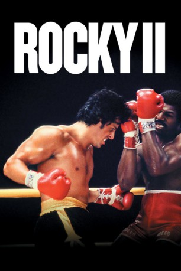

#402 Rocky 2
Alternativ: Rocky II (Originaltitel)
 
 IMDB-Wertung: 7.2 / 10
IMDB-Wertung: 7.2 / 10  Metascore: 61
Metascore: 61 
Obwohl Rocky seinen ersten großen Kampf gegen den Schwergewichts-Weltmeister Apollo Creed nach Punkten verloren hat, sehen ihn die meisten als den wahren Sieger. Und das hat nicht nur positive Auswirkungen auf seine finanzielle Situation, sondern auch auf das private Glück mit seiner Freundin Adrian. Doch Rocky, mit der neuen Situation überfordert, macht viele Fehler. Wieder der Armut nahe bleibt ihm nur eine Möglichkeit - die erneute Herausforderung von Apollo Creed annehmen und diesmal gewinnen. Doch die 15 Runden werden es in sich haben, und Rocky weiss das genau. Doch es geht um die Existenz von ihm ...und seiner Familie.
Jahr: 1979
Dauer: 119 Minuten
FSK: 12
Land: USA Studio: United ArtistsTonspuren: DTS - ,
Untertitel: Deutsch,
Auflösung: 1080p (1920x1040) Größe: 8130 MB
Genre: Drama, Sport
Regisseur:  Sylvester Stallone
Sylvester Stallone
Drehbuch: Sylvester Stallone
Soundtrack: Bill Conti
Darsteller:
 Sylvester Stallone als Rocky Balboa
Sylvester Stallone als Rocky Balboa Talia Shire als Adrian
Talia Shire als Adrian Burt Young als Paulie
Burt Young als Paulie Carl Weathers als Apollo Creed
Carl Weathers als Apollo Creed Burgess Meredith als Mickey
Burgess Meredith als Mickey- Tony Burton als Apollo's Trainer
 Joe Spinell als Gazzo
Joe Spinell als Gazzo Frank McRae als Meat Foreman
Frank McRae als Meat Foreman- John Pleshette als Director
 Bill Baldwin als Commentator
Bill Baldwin als Commentator- Herb Nanas als Employment Manager
 Frank Stallone als Singer
Frank Stallone als Singer Taurean Blacque als Lawyer
Taurean Blacque als Lawyer Grainger Hines als Emergency Room Aide
Grainger Hines als Emergency Room Aide- Ava Lazar als White Hunter
 Paul McCrane als Young Patient
Paul McCrane als Young Patient Brent Musburger als Reporter
Brent Musburger als Reporter Fran Ryan als Adrian's Nurse
Fran Ryan als Adrian's Nurse- Allan Warnick als Makeup Man
- James Zaza als Emergency Room Reporter
- James Emery als Reporter , uncredited
 Tom Lawrence als Ringside Color Announcer , uncredited
Tom Lawrence als Ringside Color Announcer , uncredited- Velvet Rhodes als Reporter , uncredited
- Leonard Gaines als Agent
- Sylvia Meals als Mary Anne Creed
 Al Silvani als Cutman
Al Silvani als Cutman Stu Nahan als Announcer
Stu Nahan als Announcer- Jerry Ziesmer als Salesman
- Paul Micale als Father Carmine
- Earl Montgomery als Employment Manager
- Stuart K. Robinson als Johnny
- Charles 'Honi' Coles als Singer
- Doug Flor als Singer
- Robert Kondyra als Singer
- James Zazzarino als Singer
- Eddie 'El Annimal' Lopez als Fighter
- James J. Casino als Chink's Manager
- Shaka Cumbuka als Cornerman
 Samuel Davis als Apollo's Bodyguard
Samuel Davis als Apollo's Bodyguard- Roberto Durán als Fighter
- Lou Fillipo als Referee
- Ruth Ann Flynn als Jewelry Sales Lady
- Linda Grey als Agent
- Garrie Kelly als White Hunter
- Joseph Letizia als Car Salesman
- René Le Vant als Young Lugger
- Tawny Little als Reporter
- Sonny Melendrez als Reporter
- Tony Munafo als Boxer
- Ed Ness als Timekeeper
Datei: X:\7+mehr(A-Z)\Rocky\Rocky 2 (1979, FSK12, 1920x1040).mkv seit 21.02.2015
Festplatte: HD Collection-7+mehr(A-Z)+Person
 Es gibt insgesamt 11 Filme in der Gruppe '7+mehr(A-Z)\Rocky'
Es gibt insgesamt 11 Filme in der Gruppe '7+mehr(A-Z)\Rocky'